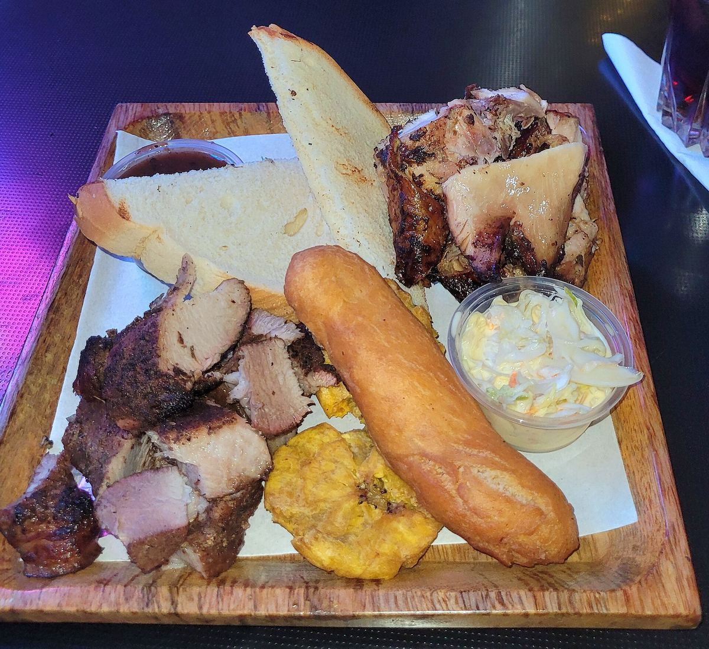

Island side
Just da meat
- Jerk chickenSlow-cooked for hours, with festival or bread
- BBQ chicken or pork ribsOff the grill, no other sides
Island plates
- Jerk chicken platterThe one guests drive across the island for
- Pulled pork or BBQ chicken sandwichWith seasoned fries; a lunch favourite
- Stewed oxtailWith butter beans and plantains
- Curry goatWith rice and fried plantains
- Steamed grouperCooked in parchment paper
- Fish and chipsAmong the best on the island, says VisitTCI
- Conch frittersWith peas and rice
- Manish wataThe traditional soup of goat and vegetables